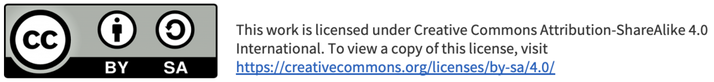

Descargar archivo fuente
| Título | SdA: elaboración de conectores RJ-45 y videotutorial |
|---|---|
| Descripción | SdA del Ciclo de Grado Medio de Instalaciones de Telecomunicaciones para el módulo de IRDST. |
| Autoría | - |
| Licencia | Creative Commons BY-SA 4.0 |
Este contenido fue creado con eXeLearning, el editor libre y de fuente abierta diseñado para crear recursos educativos.